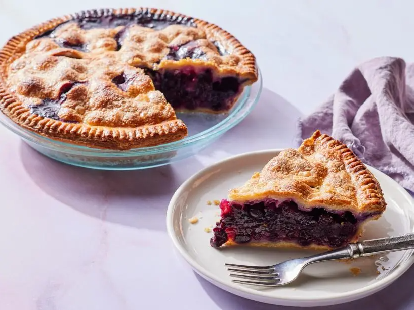

Blueberry Pie Recipe
History
The first blueberry pie was estimated to have been made in the 19th century. The first blueberry pie recipe appeared in 1872. It has become a favorite of many and is often made on days like Thanksgiving. Today, more than 690 million pounds of blueberries are grown every year in the United States.
This recipe makes a amazing blueberry pie. The filling if very extremely flavorful, and tastes great.
Ingredients:
- 4 cups fresh blueberries, washed and dried
- 1/2 cup sugar, plus extra for sprinkling
- 1/2 cup all purpose flower
- 1 teaspoon grated lemon zest
- 1/4 cup freshly squeezed lemon juice
- 1 tablespoon cassis liqueur
- 2 Pie Crusts
- 1 egg beaten with 1 tablespoon milk or cream
Directions:
- Preheat the oven to 400 degrees F. Line a sheet pan with parchment paper.
- Mix the blueberries, the 1/2 cup of sugar, the flour, lemon zest, lemon juice, and cassis in a large bowl. Carefully ease one pie crust into a 9-inch pie plate, making sure not to stretch the dough at all, or it will shrink as the pie bakes. With a sharp knife, cut the excess dough off at the edge of the pie plate. Spoon the blueberry mixture into the pie shell, scraping the bowl with a rubber spatula to be sure you have all the juices.
- Brush the edge of the crust with the egg wash. Carefully lay the second crust on top, again easing -- not stretching -- it onto the pie. Cut the excess dough off at the edge of the pie plate. Press the two edges together with a dinner fork. Brush the top crust with the eggs wash, cut three slits for steam to escape, and sprinkle with sugar.
- Place the pie on the prepared sheet pan and bake in the middle of the oven for 45 to 50 minutes, until the filling is very bubbly and the crust is nicely browned. Allow to cool and serve warm or at room temperature.
- Cut the butter in 1/2-inch dice and return it to the refrigerator while you prepare the flour mixture. Place the flour, sugar, and salt in the bowl of a food processor fitted with a steel blade and pulse a few times to mix. Add the butter and shortening. Pulse 8 to 12 times, until the butter is the size of peas. With the machine running, pour the ice water down the feed tube and pulse the machine until the dough begins to form a ball. Dump out onto a floured board and roll into a ball. Wrap in plastic wrap and refrigerate for 30 minutes.
- Cut the dough in half. Roll each piece on a well-floured board into a circle at least 1 inch larger than the pie pan, rolling from the center to the edge, turning and flouring the dough so it doesnt stick to the board. (You should see bits of butter in the dough.) Fold the dough in half, ease it into the pie pan without stretching at all, and unfold to fit the pan. With a small sharp paring knife, cut the dough 1 inch larger around than the pan. Fold the edge under and crimp the edge with either your fingers or the tines of a fork.xa

Video:
Reference List Entry
National Blueberry Pie Day